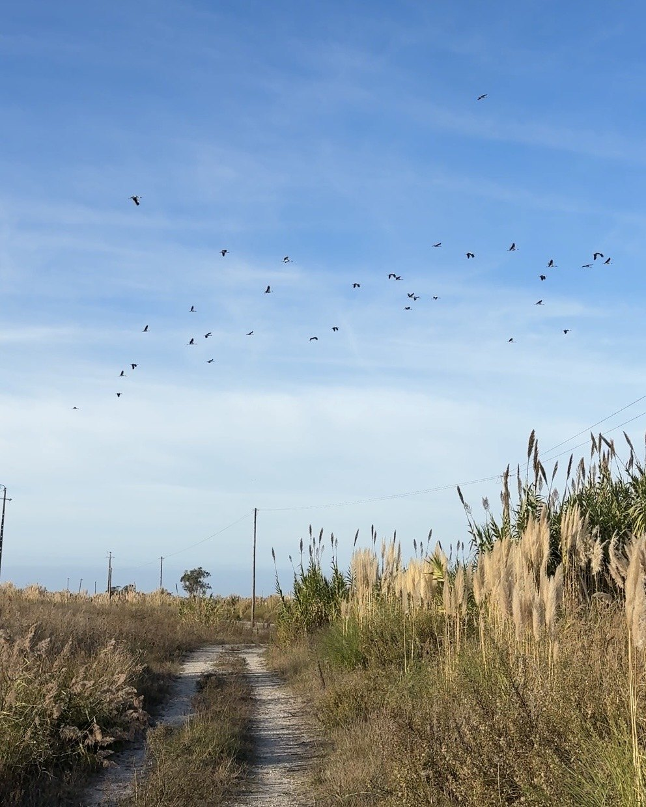

Um tesouro natural que define a região
É assim que a Ria é apresentada nos documentos e nos materiais que promovem a região.
A Ria aparece nos materiais turísticos, nas fotografias e nos discursos sobre Aveiro. É apresentada como uma das grandes riquezas da região. Mas há uma diferença entre mostrar a sua beleza e protegê-la nas decisões reais.
Sou uma residente de Aveiro e pergunto-me: se esta paisagem é tão preciosa, porque é que as decisões sobre ela parecem contar outra história?
The Ria features in tourism materials, photographs and descriptions of Aveiro. It is presented as one of the region’s greatest treasures. But showing off its beauty is not the same as protecting it through real decisions.
I live in Aveiro, and I keep asking myself: if this landscape is so precious, why do the decisions affecting it seem to tell a different story?

Aveiro Cidade & Ria · fotografia da autoraNum documento oficial, a Câmara de Aveiro fala da Ria como parte da história e da identidade da cidade e chama-lhe um dos seus maiores valores naturais.
O Estado também reconhece a sua importância: partes da Ria estão protegidas pela Rede Natura 2000. Em 2026, foi aprovado um novo plano para proteger a natureza destes lugares.
As palavras de reconhecimento estão nos documentos oficiais. Mas, quando caminho perto da Ria e vejo o que está planeado para a Antiga Lota, pergunto-me como é que essas palavras se refletem nas escolhas feitas.
In an official document, Aveiro Municipality describes the Ria as part of the city's history and identity and among its greatest natural assets.
Portugal also recognises its importance: parts of the Ria are protected under Natura 2000. In 2026, a new management plan was approved to protect nature in these areas.
Those words of recognition are in the official documents. But when I walk beside the Ria and look at what is planned for Antiga Lota, I wonder how those words are reflected in real decisions.
É assim que a Ria é apresentada nos documentos e nos materiais que promovem a região.
That is how the Ria is presented in official documents and materials promoting the region.
Trânsito junto às salinas e aos canais. E planos para casas, hotel e comércio na Antiga Lota.
Traffic beside the salt pans and channels. And plans for housing, a hotel and shops at Antiga Lota.
Tenho a sensação de que a Ria faz parte da alma desta região. Está nas histórias de Aveiro, nas salinas, nos barcos e nas lembranças de tantas famílias. E está também nas aves que passam ao fim da tarde, nos peixes, nas plantas e na água que muda com as marés.
Para mim, a Ria não é apenas uma paisagem bonita. É um lugar cheio de vida que merece ser respeitado.
É por isso que me custa tanto aceitar o contraste. Ao lado das salinas, ouço o ruído quase constante da A25. Vejo carros e camiões a passar junto a lugares onde vivem aves e outras espécies. E continuo sem encontrar respostas claras sobre a água da chuva que escorre da estrada, a iluminação e as medidas de proteção da natureza.
Não afirmo que a estrada esteja a contaminar a Ria — isso teria de ser demonstrado. O que peço são respostas concretas: o que foi estudado, que proteção existe e será ela suficiente?
E agora, na Antiga Lota, a Câmara avança com planos para casas, um hotel e comércio. Não se trata ainda de uma licença de construção. Mas porque é que, perante um lugar tão valioso, a primeira conversa não é sobre como devolver espaço à natureza?
É isto que me deixa tão triste. A Ria surge como símbolo de Aveiro em campanhas, textos de promoção e discursos sobre a cidade. É um lugar que se recomenda aos visitantes, uma imagem de que a região se orgulha. Mas porque é que não vejo a mesma força quando chega a hora de a proteger?
O que também me dói é a sensação de que estas questões quase não se ouvem no debate público. Porque não se fala mais disto? Talvez existam muitas pessoas preocupadas, mas as suas vozes não cheguem longe. Há, pelo menos, uma prova de que esta inquietação já existia há décadas.
Há quase quarenta anos, um morador escreveu ao Diário de Aveiro sobre a construção do IP5 junto às salinas. Já então alguém temia pelo futuro desta paisagem.
Ler o jornal da época ↗Escrevo porque me importo com este lugar. E porque acredito que há outras pessoas que também se importam. Gostaria de juntar essas vozes, não de começar uma discussão entre quem tem opiniões diferentes.
Sei que as pessoas precisam de casas, trabalho e estradas. Mas acredito que há lugares onde construir mais não deve ser a primeira resposta.
A Ria já existia antes das cidades e das estradas de hoje. É casa de muitas outras formas de vida. Não precisa de dar lucro para merecer cuidado. E não pertence moralmente a quem toma decisões ou a quem possa ganhar dinheiro com o seu futuro. As pessoas fazem parte desta paisagem, mas não são donas da vida que nela existe.
Por isso, o meu pedido é simples: que as promessas de proteção se tornem decisões reais. Que os estudos sejam públicos. Que as pessoas sejam ouvidas. E que a opção de preservar e recuperar a natureza seja levada tão a sério como a opção de construir.
A Ria não pertence a ninguém
Mas merece ser protegida por todos
To me, the Ria feels like part of the soul of this region. It lives in Aveiro’s stories, salt pans, boats and the memories of local families. And it is also home to birds flying overhead at dusk, fish, plants and the changing tides.
To me, the Ria is more than a beautiful view. It is a living place that deserves respect.
That is why I find the contrast so painful. Beside the salt pans, I hear the almost constant noise of the A25. I see cars and lorries passing close to places where birds and other species live. And I still cannot find clear answers about road runoff, lighting and measures to protect nature.
I am not claiming that the road is polluting the Ria — that would require evidence. What I am asking for are real answers: what has been studied, what protection exists, and is it enough?
And now, at Antiga Lota, the municipality is moving forward with plans for housing, a hotel and shops. This is not yet a building permit. But when a place is so precious, why is the first conversation not about giving some space back to nature?
This is what makes me so sad. The Ria appears as a symbol of Aveiro in campaigns, visitor information and descriptions of the city. It is a place recommended to visitors, an image the region is proud to share. But why don’t I see the same energy when it comes to protecting it?
What also hurts is the feeling that these questions barely reach the public debate. Why is this not talked about more? Perhaps many people are concerned but their voices do not carry far. There is, at least, evidence that this concern existed decades ago.
Almost forty years ago, a local resident wrote to Diário de Aveiro about construction of the IP5 near the salt pans. Even then, someone feared for the future of this landscape.
Read the original newspaper ↗I write because I care about this place. And because I believe other people care about it too. I would like to bring those voices together, not start a fight between people who disagree.
I know people need homes, jobs and roads. But I believe there are places where building more should not be the first answer.
The Ria existed before today’s cities and roads. It is home to many other forms of life. It does not need to make money to deserve care. Nor does it morally belong to people making decisions or those who might profit from its future. People are part of this landscape, but do not own the life within it.
That is why my request is simple: turn promises of protection into real decisions. Make studies public. Listen to people. And take the option of protecting and restoring nature as seriously as the option of building.
The Ria belongs to no one
But everyone can help protect it
Mostrar os estudos e as medidas sobre ruído, luz e água da estrada, e explicar se são suficientes.
Show the studies and measures for road noise, lighting and runoff, and explain whether they are sufficient.
Comparar publicamente a construção prevista com uma alternativa sem novos edifícios, dedicada à recuperação da natureza.
Publicly compare planned development with a nature-restoration option without new buildings.
Explicar, de forma simples, como se está a aplicar o plano de proteção da Ria e como as pessoas podem participar.
Explain in plain language how the Ria's protection plan is being put into practice and how people can take part.
A Ria não é um assunto apenas municipal. O plano de conservação aprovado em 2026 abrange vários concelhos. Preparei um pedido ao Ministério do Ambiente para saber como se está a proteger a laguna, tendo em conta a A25 e a Antiga Lota. Preparei também um projeto de petição ao Parlamento, ainda não submetido.
Conhecer a ação nacional e os dois textos ↗A carta e a petição ainda não foram enviadas ou registadas. O projeto da petição não está aberto a assinaturas.
Protecting the Ria is not just a municipal question. The conservation plan approved in 2026 covers several municipalities. I have prepared a letter asking the Environment Ministry how the lagoon is being protected in light of the A25 and Antiga Lota, and a draft petition for Portugal's Parliament that has not yet been submitted.
See the national action and draft documents ↗The letter and petition have not been sent or registered. The draft petition is not open for signatures.
Não quero apenas recolher mensagens de apoio. Quero que a proteção da Ria seja discutida como um todo, tendo em conta tanto a A25, que já existe, como as mudanças previstas na Antiga Lota. São questões diferentes, mas dizem respeito à mesma paisagem.
I do not simply want to collect messages of support. I want the Ria to be considered as one living landscape, taking into account both the existing A25 and proposed changes at Antiga Lota. They are different issues, but concern the same place.
Preparei um email para a Assembleia Municipal de Aveiro com dois pedidos: que a Câmara procure respostas junto das entidades responsáveis pela A25 e que a alternativa de recuperar a Antiga Lota para a natureza seja discutida publicamente. O texto pede também que se considere o efeito conjunto das pressões existentes e das novas obras propostas.
O email é enviado por si, se assim o decidir. Pode alterá-lo e assinar com o seu nome. Nada é enviado automaticamente.
I have prepared an email to Aveiro Municipal Assembly requesting two things: that the municipality seek answers from the bodies responsible for the A25, and that a nature-restoration alternative for Antiga Lota be openly discussed. It also asks for existing pressures and new development plans to be considered together.
The email is sent only if you choose to send it. You can edit the Portuguese draft and sign it with your name. Nothing is sent automatically.
Para: am.aveiro@cm-aveiro.pt
Exmos. Senhores membros da Assembleia Municipal de Aveiro, Escrevo a título individual por me preocupar com o futuro da Ria de Aveiro. Gostaria de pedir aos membros e grupos municipais que considerem uma recomendação ou pedido formal de informações sobre dois assuntos ligados à proteção da Ria: 1. A25 junto às salinas e zonas húmidas: solicitar à Câmara que, em articulação com as entidades competentes (APA, ICNF e concessionária), esclareça que estudos e medidas existem sobre ruído, iluminação, drenagem e águas de escorrência, quais são os resultados e se é necessária avaliação adicional e mitigação. 2. Antiga Lota / Parque das Marinhas: solicitar um debate público que compare a proposta de urbanização com uma alternativa de conservação e recuperação ecológica sem novos edifícios, com acesso aos estudos ambientais relevantes. Peço também que seja considerada a avaliação conjunta das pressões existentes e das novas transformações previstas nesta paisagem, sem pressupor danos ainda não demonstrados. Declaração pública: https://aveirocidade-ria.github.io/declaracao.html Agradeço resposta por escrito sobre o encaminhamento dado ao pedido. Com os melhores cumprimentos,
Este pedido à Assembleia não substitui as competências das autoridades ambientais ou da concessionária. É um pedido para que os representantes da cidade ajudem a obter respostas e a promover um debate informado, não uma petição formal nem uma garantia de inclusão na ordem de trabalhos.
This request does not replace the responsibilities of environmental authorities or the motorway operator. It asks elected representatives to help obtain answers and enable informed discussion. It is not a formal petition and does not guarantee an agenda item.
Existem mapas oficiais de ruído da A25. Mas isso não responde, por si só, a todas as perguntas sobre os habitats junto da estrada. O segundo email pede à Agência Portuguesa do Ambiente informação sobre ruído, águas de escorrência, iluminação, medidas existentes e necessidade de avaliação adicional, em articulação com as entidades competentes.
Official A25 noise maps already exist. But these alone do not answer every question about nearby natural habitats. The second email asks Portugal's Environment Agency (APA) for information about noise, runoff, lighting, existing safeguards and any need for further assessment, in coordination with the relevant bodies.
Para: geral@apambiente.pt
Exmos. Senhores da Agência Portuguesa do Ambiente, Escrevo a título individual para pedir informação sobre a proteção dos ambientes lagunares junto à A25, na zona das salinas e canais da Ria de Aveiro. Sei que existem mapas estratégicos de ruído da A25. Gostaria de saber que avaliações e medidas estão disponíveis especificamente para os troços próximos dos habitats sensíveis, incluindo: - ruído rodoviário e eventual necessidade de medidas de redução; - drenagem, pontos de descarga, qualidade e eventual tratamento das águas de escorrência da estrada; - iluminação noturna e possíveis efeitos sobre aves e habitats; - necessidade de análise complementar e de medidas de mitigação, incluindo em articulação com ICNF e a concessionária Ascendi. Não afirmo que exista contaminação comprovada ou danos ecológicos demonstrados; peço informação sobre os dados disponíveis, lacunas e ações previstas. Se parte do pedido for da competência de outra entidade, agradeço o respetivo encaminhamento ou indicação da entidade responsável. Declaração pública: https://aveirocidade-ria.github.io/declaracao.html Dossiê A25: https://aveirocidade-ria.github.io/a25.html Agradeço resposta por escrito e indicação dos documentos que possam ser consultados. Com os melhores cumprimentos,
Isto não afirma que exista contaminação ou que faltem medidas; pede dados e esclarecimentos. A APA poderá encaminhar assuntos da competência de outras entidades.
This does not claim proven pollution or missing safeguards. It requests information and evidence. APA may refer matters to other responsible bodies.
Se tem fotografias, conhecimentos sobre aves, água ou transporte, documentos ou uma ideia concreta, pode enviar-me uma mensagem privada. Não publico nomes ou mensagens sem autorização.
Escrever em privado ↗If you have photographs, expertise about birds, water or transport, documents or a practical idea, you can send me a private message. I will not publish names or messages without permission.
Send a private message ↗Os factos principais desta declaração estão documentados. As questões sobre água, ruído e efeitos na natureza são perguntas que ainda merecem respostas claras. Para detalhes, consulte o dossiê A25 e a investigação sobre a Antiga Lota.
The key facts in this declaration are documented. Questions about runoff, noise and effects on nature remain questions, not proven damage. For details, see the A25 dossier and Antiga Lota investigation.